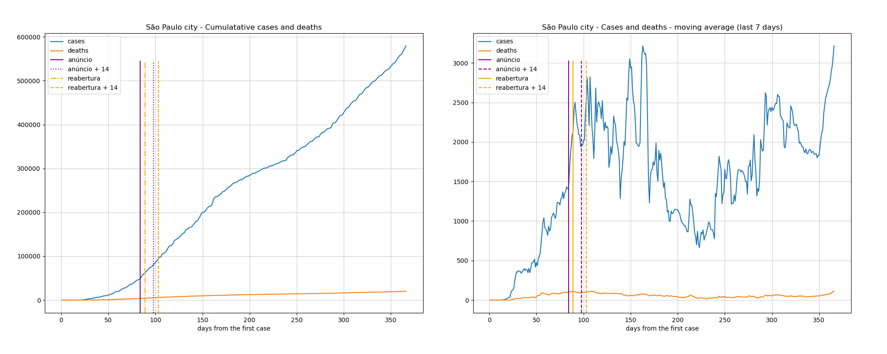

Indicadores relativos aos dados da pandemia Covid19 no estado de São Paulo até a data de 03/05/2020.
Estas informações são para uso próprio e não devem ser utilizadas para direcionamentos médicos e/ou políticas públicas.
| 26/04/2020 | 03/05/2020 | variação | |
|---|---|---|---|
| casos | 20715.0 | 31772.0 | 53% |
| mortes | 1700.0 | 2627.0 | 54% |
| cidades contaminadas | 285 (44%) | 337 (52%) | 18% |
O nível de mortalidade demonstrado no mapa é definido a partir da média móvel dos últimos 7 dias da mortalidade de cada cidade.
Mova o mouse pelo mapa para detalhes de cada região.
O nível de transmissão demonstrado no mapa é definido a partir da média móvel dos últimos 7 dias do acumulado de casos de cada cidade.
Mova o mouse pelo mapa para detalhes de cada região.
Mais: Santa Gertrudes, Rio Claro, Cordeiropolis, Limeira, Lucelia, Adamantina
O ranking é feito a partir da média móvel de 7 dias do percentual de mortalidade de cada cidade.
| city | date | day | case_day | cases | death_day | deaths | avg7_cases | avg7_deaths | avg7_perc_death | perc_death | |
|---|---|---|---|---|---|---|---|---|---|---|---|
| 1 | caiabu | 2020-05-03 | 23 | 0 | 1, | 0 | 1, | 0, | 0, | 100,00 | 100,00 |
| 2 | jarinu | 2020-05-03 | 10 | 0 | 1, | 0 | 1, | 0, | 0, | 100,00 | 100,00 |
| 3 | rincao | 2020-05-03 | 20 | 0 | 1, | 0 | 1, | 0, | 0, | 100,00 | 100,00 |
| 4 | pitangueiras | 2020-05-03 | 11 | 0 | 1, | 0 | 1, | 0, | 0, | 100,00 | 100,00 |
| 5 | santa rita do passa quatro | 2020-05-03 | 11 | 0 | 1, | 0 | 1, | 0, | 0, | 100,00 | 100,00 |
| 21 | rio claro | 2020-05-03 | 35 | 0 | 18, | 0 | 8, | 0, | 0, | 43,78 | 44,44 |
| 23 | lucelia | 2020-05-03 | 11 | 0 | 7, | 0 | 2, | 0, | 0, | 40,82 | 28,57 |
| 145 | limeira | 2020-05-03 | 32 | 0 | 35, | 0 | 1, | 2, | 0, | 3,33 | 2,86 |
| 208 | santa gertrudes | 2020-05-03 | 18 | 0 | 1, | 0 | 0, | 0, | 0, | 0,00 | 0,00 |
| 215 | adamantina | 2020-05-03 | 20 | 0 | 6, | 0 | 0, | 0, | 0, | 0,00 | 0,00 |
| 230 | cordeiropolis | 2020-05-03 | 10 | 0 | 1, | 0 | 0, | 0, | 0, | 0,00 | 0,00 |
Mais: Santa Gertrudes, Rio Claro, Cordeiropolis, Limeira, Lucelia, Adamantina
O ranking é feito a partir da média móvel de 7 dias do percentual de casos acumulados de cada cidade.
| city | date | day | case_day | cases | death_day | deaths | avg7_cases | avg7_deaths | avg7_perc_death | perc_death | |
|---|---|---|---|---|---|---|---|---|---|---|---|
| 1 | sao paulo | 2020-05-03 | 36 | 328 | 19822, | 12 | 1673, | 901, | 79, | 8,48 | 8,44 |
| 2 | osasco | 2020-05-03 | 36 | 27 | 914, | 1 | 93, | 53, | 5, | 10,18 | 10,18 |
| 3 | guarulhos | 2020-05-03 | 36 | 17 | 833, | 1 | 76, | 48, | 3, | 9,49 | 9,12 |
| 4 | sao bernardo do campo | 2020-05-03 | 36 | 11 | 731, | 7 | 52, | 36, | 3, | 6,58 | 7,11 |
| 5 | santo andre | 2020-05-03 | 36 | 2 | 580, | 0 | 35, | 33, | 2, | 5,81 | 6,03 |
| 6 | santos | 2020-05-03 | 34 | 3 | 609, | 0 | 47, | 26, | 3, | 7,76 | 7,72 |
| 50 | limeira | 2020-05-03 | 32 | 0 | 35, | 0 | 1, | 2, | 0, | 3,33 | 2,86 |
| 175 | rio claro | 2020-05-03 | 35 | 0 | 18, | 0 | 8, | 0, | 0, | 43,78 | 44,44 |
| 186 | santa gertrudes | 2020-05-03 | 18 | 0 | 1, | 0 | 0, | 0, | 0, | 0,00 | 0,00 |
| 195 | adamantina | 2020-05-03 | 20 | 0 | 6, | 0 | 0, | 0, | 0, | 0,00 | 0,00 |
| 216 | cordeiropolis | 2020-05-03 | 10 | 0 | 1, | 0 | 0, | 0, | 0, | 0,00 | 0,00 |
| 281 | lucelia | 2020-05-03 | 11 | 0 | 7, | 0 | 2, | 0, | 0, | 40,82 | 28,57 |
Os dados da cidade de São Paulo destoa das demais cidades o que prejudica a comparação em um mesmo gráfico, por isso os apresento separadamente.

Excluída a cidade de São Paulo